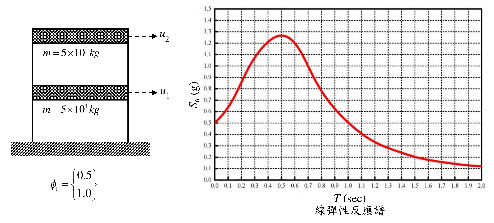
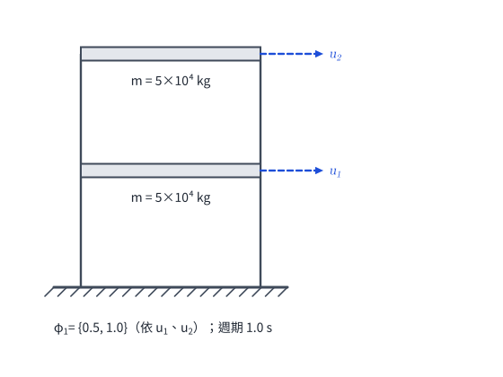
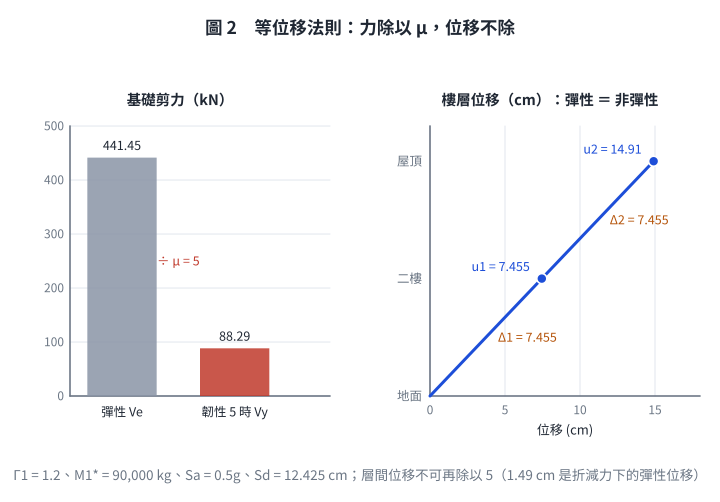

📄 題目正本：考卷原文・附圖・判讀清單（已確認）
SD-2019-3 題目正本
本檔只記錄考卷上寫了什麼、圖上畫了什麼，不含任何解法。解析見同資料夾
SD-2019-3.md。
判讀清單經使用者確認前，狀態為「待確認」；確認後本檔原則上不再修改（改動須回考卷原圖並記 log）。
| 項目 | 內容 |
|---|---|
| 考卷 | raw/exams/SD-2019_結構動力分析與耐震設計.pdf，第 2 頁（頁次 2－2），第三題 |
| 考年 | 2019（民國108年）專技高考結構工程技師「結構動力分析與耐震設計」 |
| 配分 | 25 分（㈠ 15 分、㈡ 10 分） |
| 附圖 | SD-2019-3-fig-1.png（舊擷取，反應譜縱軸 0.8 處與質量標示附近有滑鼠游標）、SD-2019-3-fig-2.png（2026-11-15 由考卷 500 dpi 重擷取） |
| 判讀狀態 | 已確認（2026-11-15 使用者授權依 Claude 建議確認。原轉錄：2026-11-15 轉錄；PyMuPDF 110 dpi 整頁＋450 dpi 局部放大，PDF 文字層核對原文；反應譜為考卷內嵌點陣圖 760×537 px，以格線像素校準讀值；盲讀於開啟解析前完成） |
1. 考卷原文（逐字）
三、兩層樓建築物如下左圖所示，自由度之編號如圖中之 $u_1$ 和 $u_2$，經由線彈性分析已得知其振動週期為 1 秒，第一振態為 $\phi_1=\{0.5,1.0\}^{\mathrm T}$。另外，已知在極限狀態下（ultimate state）的彈性反應譜如下右圖所示。基於初步設計的概估需求，請依據位移不變法則及僅考慮基本振態，試回答以下問題：
㈠當位移韌性達 5 時，其基礎剪力為何？（15 分）
㈡在此地震力作用下，分別求上下兩層的層間位移？（10 分）
2. 考卷給的公式、附表與參數
- 考卷沒有給參考公式。
- 給定：兩層質量皆 $m=5\times10^4\,kg$（圖上）；振動週期 1 秒；$\phi_1=\{0.5,1.0\}^{\mathrm T}$（$u_1$、$u_2$ 依序）；位移韌性 5；依位移不變法則、僅考慮基本振態。
- 右圖「線彈性反應譜」：縱軸 $S_a$ (g) 0.0–1.5（格距 0.1）、橫軸 $T$ (sec) 0.0–2.0（格距 0.1）；曲線自 $T=0$、$S_a=0.5$ 上升，約 $T=0.5$ s 達峰值約 1.27，之後下降至 $T=2.0$ s 約 0.12。
- 反應譜讀值（考卷內嵌點陣圖依格線像素校準，曲線線寬中心；本次轉錄數位化）：
| $T$ (s) | 0.5 | 0.9 | 0.95 | 1.0 | 1.05 | 1.1 |
|---|---|---|---|---|---|---|
| $S_a$ (g) | 1.26 | 0.63 | 0.56 | 0.51 | 0.45 | 0.41 |
目視：$T=1.0$ s 時曲線通過 $S_a=0.5$ 格線（數位化 0.506）。
- 考卷沒有給：樓層勁度、樓高、阻尼比、$g$ 值、第二振態；「振動週期為 1 秒」未寫明為第一振態週期（見判讀 #2）。
- 卷首注意事項：㈠可以使用電子計算器。㈡不必抄題，作答時請將試題題號及答案依照順序寫在試卷上，於本試題上作答者，不予計分。㈢本科目除專門名詞或數理公式外，應使用本國文字作答。考試時間：2 小時。
3. 附圖

證據圖 SD-2019-3-fig-2.png（500 dpi 重擷取；舊圖 SD-2019-3-fig-1.png 內容相同，有游標）
圖面文字照錄：u2、m = 5×10⁴ kg、u1、m = 5×10⁴ kg、φ1 = {0.5; 1.0}；Sa (g)、T (sec)、線彈性反應譜、刻度 0.0–1.5、0.0–2.0
4. 判讀清單
| # | 項目 | 判讀 | 圖上／題文依據 | 把握 |
|---|---|---|---|---|
| 1 | $S_a(T=1.0)$ | $0.50g$（格線像素校準 0.506，目視曲線通過 0.5 格線） | 右圖；內嵌點陣圖 760×537 px，$T$ 軸 0→2.0 對應 x＝76→736.5 px、$S_a$ 軸 0→1.5 對應 y＝444.5→21 px | 確定（解讀） |
| 2 | 「振動週期為 1 秒」 | 指基本（第一）振態週期 $T_1=1.0$ s | 題文「僅考慮基本振態」緊接其後 | 確定（解讀） |
| 3 | 振態分量順序 | $\phi_1=\{0.5,1.0\}^{\mathrm T}$ 依序對應 $u_1$（二樓）、$u_2$（屋頂） | 題文「自由度之編號如圖中之 $u_1$ 和 $u_2$」；圖上 $u_1$ 在下 | 確定 |
| 4 | 質量 | 兩層皆 $5\times10^4$ kg | 左圖兩處標示 | 確定 |
| 5 | 位移不變法則 | 非彈性位移＝彈性位移，折減係數 $R=\mu=5$ | 題文「位移不變法則」「位移韌性達 5」 | 確定（解讀） |
| 6 | 反應譜性質 | 線彈性、極限狀態；$S_a$ 以 g 為單位 | 右圖圖名與縱軸、題文 | 確定 |
| 7 | 所求 | ㈠ 基礎剪力；㈡ 上下兩層層間位移 | 題文 | 確定 |
| 8 | 考卷沒有給 | 樓層勁度、樓高、阻尼比、$g$ 值、第二振態 | 題文 | 確定 |
轉錄：2026-11-15（SD-U1-3 題目正本推廣・批 3）
確認：2026-11-15 使用者授權依 Claude 建議確認（SD-U1-3 題目正本推廣・批 3，關卡一）
考題編號：SD-2019-3
主分類： SD-U1-3 單自由度、多自由度系統之動態分析及應用
副分類： SD-U2-2 建築耐震設計規範
分析方法： 反應譜分析與等位移法則 (Response Spectrum Analysis & Equal Displacement Principle)
標籤： 反應譜 MDOF 位移不變法則 韌性 等效質量 振態參與係數 基礎剪力 層間位移
1. 題目（考卷原文見題目正本）
考卷原文、公式／附表、附圖與判讀清單（已確認）見
SD-2019-3-problem.md。本節只列解題時最容易讀錯的地方與本解使用的記號；題意以題目正本為準。

重繪自考卷附圖，依題目正本判讀清單；本圖攔下的判讀錯誤：φ1 分量依 u1（二樓）、u2（屋頂）排列。
常見誤讀
| 項目 | 正確判讀 | 常見誤讀 |
|---|---|---|
| $S_a(T=1.0)$ | $0.50g$（題目正本數位化 0.506；判讀 #1） | 讀成峰值 1.27 g 或 0.6 g |
| 週期 | 1 秒為基本振態週期（判讀 #2） | — |
| 振態順序 | $\phi_1=\{0.5,1.0\}$ 依 $u_1$（二樓）、$u_2$（屋頂）（判讀 #3） | 上下顛倒 |
| 位移不變法則 | 非彈性位移＝彈性位移，$R=\mu=5$（判讀 #5） | 層間位移再除以 5 |
本解記號： $\Gamma_1=L_1/M_1$；$S_d=S_a/\omega^2$；$\Delta_i$ 為第 $i$ 層層間位移。
2. 考題核心精神與出題者意圖 (Core Concepts & Examiner's Intent)
核心觀念：
- 振態參與係數與等效質量： 在反應譜分析中，單一模態所激發的基礎剪力與位移，需透過 $\Gamma_1$ 及 $M_1^*$ 進行計算。
- 等位移法則（Equal Displacement Principle）： 對於中長週期結構（如本題 $T=1.0\text{ s}$），降伏後的非彈性最大位移 $\Delta_u$ 約等於假設系統保持彈性時的最大位移 $\Delta_e$。
- 韌性與力量折減： 由於位移相同，力量的折減係數 $R$ 恰好等於位移韌性比 $\mu$。即降伏基礎剪力 $V_y = V_e / \mu$。
出題者測驗能力：
- 能從給定的圖表中正確讀取 $S_a(T=1.0\text{ s})$ 的數值。
- 熟練計算 MDOF 系統的模態參與係數 $\Gamma$ 與有效模態質量 $M_1^*$。
- 了解反應譜位移 $S_d$ 與加速度 $S_a$ 的關係 ($S_d = S_a / \omega^2$)。
- 正確應用「等位移法則」，將彈性分析結果轉換為非彈性設計目標（力量折減、位移等同）。
3. 解題戰略地圖與陷阱分析 (Strategic Roadmap & Trap Analysis)
戰略地圖：
- 讀取反應譜數值： 觀察題圖，在橫軸 $T=1.0$ 處對應之縱軸值為 $S_a = 0.5g$。
- 計算模態特性： 計算第一振態的廣義質量 $M_1$、廣義動量 $L_1$、參與係數 $\Gamma_1$ 與有效模態質量 $M_1^*$。
- 計算彈性基礎剪力： $V_e = M_1^* \cdot S_a$。
- 應用位移不變法則求設計剪力： 力量折減係數 $R = \mu = 5$，故極限基礎剪力 $V_y = V_e / 5$。
- 計算樓層位移： 計算譜位移 $S_d = S_a / \omega^2$，並利用 $U = \Gamma_1 S_d \phi_1$ 求出樓層位移。
- 求層間位移： 相鄰樓層位移相減得層間位移。因位移不變法則，非彈性層間位移即為彈性層間位移。
四大陷阱：
| # | 陷阱 | 正確處理 |
|---|---|---|
| 1 | 誤將單層剪力視為總剪力 | 彈性基礎剪力 $V_e$ 應由有效模態質量 $M_1^*$ 乘上 $S_a$，而非總質量 $M_{tot} \cdot S_a$ 或 $m \cdot S_a$。 |
| 2 | 未轉換譜位移 $S_d$ | 直接將 $S_a$ 當地位移代入公式是致命錯誤，必須透過 $S_d = S_a / \omega^2$ 進行頻率域轉換。 |
| 3 | 不熟悉等位移法則的定義 | 誤以為 $\Delta_u = \mu \Delta_e$ 等錯誤公式。中長週期的等位移法則為 $\Delta_u = \Delta_e$ 及 $V_y = V_e / \mu$。 |
| 4 | $g$ 值單位的混淆 | 計算 $V_e$ 時需將 $g$ 轉為 $9.81\text{ m/s}^2$ 得出牛頓 (N)，或在計算 $S_d$ 時將 $g$ 轉為 $981\text{ cm/s}^2$ 方便求公分。 |
3.5 變數層次分析（Variable Hierarchy Analysis）
複習提示：第一次解題後，在每個卡住的知識點旁標記
⚠；第二次複習時只看有⚠的項目。
最終目標
求出韌性達 5 時之基礎剪力 (Vy) 與各樓層之層間位移 (Δi)
本題關鍵公式（依計算順序）
$\boxed{\cdot}$ = 需由前步驟推導，非題目直接給定的變數
$$\text{Step 1: } \boxed{\Gamma_1} = \frac{\boxed{L_1}}{\boxed{M_1}} = \frac{\phi_1^T M \mathbf{1}}{\phi_1^T M \phi_1}$$
$$\text{Step 2: } \boxed{V_e} = \boxed{M_1^*} S_a = \frac{\boxed{L_1}^2}{\boxed{M_1}} S_a$$
$$\text{Step 3: } V_y = \frac{\boxed{V_e}}{\mu} \text{ (等位移法則)}$$
$$\text{Step 4: } \boxed{S_d} = \frac{S_a}{\omega^2} = \frac{S_a}{(2\pi/T)^2}$$
$$\text{Step 5: } U = \boxed{\Gamma_1} \boxed{S_d} \phi_1 \implies \Delta_i = U_i - U_{i-1}$$
L1：題目直接給定
看到題目就能讀出的數字，不需要任何公式。
| 符號 | 數值 | 說明 |
|---|---|---|
| $m$ | $5 \times 10^4$ kg | 各樓層質量 |
| $T$ | $1.0$ sec | 基本週期 |
| $\phi_1$ | $\{0.5, 1.0\}^T$ | 第一振態 |
| $S_a$ | $0.5g$ | $T=1.0$ sec 處的加速度反應譜值 |
| $\mu$ | $5$ | 目標位移韌性 |
L2：需知識點推導
需要知道公式名稱與適用條件，套入 L1 即可算出。
Step 1：模態參數計算
| 符號 | 公式/來源 | 卡關? |
|---|---|---|
| $L_1$ | $\sum m_i \phi_{i} = m(0.5) + m(1.0) = 1.5m$ | |
| $M_1$ | $\sum m_i \phi_{i}^2 = m(0.5^2) + m(1.0^2) = 1.25m$ | |
| $\Gamma_1$ | $L_1 / M_1 = 1.2$ | |
| $M_1^*$ | $L_1^2 / M_1 = 1.8m$ |
Step 2：力與位移計算
| 符號 | 公式/來源 | 卡關? |
|---|---|---|
| $V_e$ | $M_1^* \cdot S_a = 0.9 mg$ | |
| $V_y$ | $V_e / \mu = 0.18 mg$ | |
| $S_d$ | $S_a / (2\pi/T)^2$ | |
| $U$ | $\Gamma_1 S_d \phi_1$ |
L3：深層知識（不懂就卡住）
L2 中某些公式本身需要背景概念才能正確應用的知識點。
| 知識點 | 說明 | 卡關? |
|---|---|---|
| 等位移法則 | 適用於中長週期結構，非彈性最大位移等於彈性最大位移 ($U_u = U_e$)，且力量折減係數等於韌性容量 ($R = \mu$)。 |
4. 關鍵運算推導過程 (Key Derivations)
1. 模態參數計算
已知質量矩陣 $M = \begin{bmatrix} m & 0 \\ 0 & m \end{bmatrix}$，振態 $\phi_1 = \begin{Bmatrix} 0.5 \\ 1.0 \end{Bmatrix}$。
-
廣義質量 $M_1$：
$M_1 = \phi_1^T M \phi_1 = m(0.5)^2 + m(1.0)^2 = 1.25m = 1.25 \times 50000 = 62500 \text{ kg}$ -
廣義動量 $L_1$：
$L_1 = \phi_1^T M \mathbf{1} = m(0.5) + m(1.0) = 1.5m = 1.5 \times 50000 = 75000 \text{ kg}$ -
模態參與係數 $\Gamma_1$：
$\Gamma_1 = \frac{L_1}{M_1} = \frac{1.5m}{1.25m} = 1.2$ -
有效模態質量 $M_1^*$：
$M_1^* = \frac{L_1^2}{M_1} = \frac{(1.5m)^2}{1.25m} = 1.8m = 1.8 \times 50000 = 90000 \text{ kg}$
2. 計算基礎剪力
從圖中讀取 $T=1.0\text{ sec}$ 的反應譜值：$S_a = 0.5g$。
-
彈性基礎剪力 $V_e$：
$$ V_e = M_1^* S_a = 90000 \text{ kg} \times 0.5g = 45000g \text{ (N)} $$
若取 $g = 9.81 \text{ m/s}^2$：
$$ V_e = 45000 \times 9.81 = 441,450 \text{ N} = 441.45 \text{ kN} $$ -
韌性達 5 時之基礎剪力 $V_y$：
依據位移不變法則（等位移法則），對於 $T=1.0\text{ sec}$ 的中長週期結構，力量折減係數 $R$ 等於位移韌性 $\mu$。
$$ V_y = \frac{V_e}{\mu} = \frac{V_e}{5} = \frac{441.45}{5} = 88.29 \text{ kN} $$
3. 計算樓層層間位移
依據等位移法則，極限狀態下之樓層位移即等於假設保持完全彈性時的位移。
-
自然圓頻率 $\omega$：
$$ \omega = \frac{2\pi}{T} = 2\pi \text{ rad/sec} $$ -
譜位移 $S_d$：
取 $g = 981 \text{ cm/s}^2$：
$$ S_d = \frac{S_a}{\omega^2} = \frac{0.5 \times 981}{(2\pi)^2} = \frac{490.5}{39.478} = 12.425 \text{ cm} $$ -
樓層位移向量 $U$：
$$ U = \Gamma_1 S_d \phi_1 = 1.2 \times 12.425 \times \begin{Bmatrix} 0.5 \\ 1.0 \end{Bmatrix} = 14.91 \begin{Bmatrix} 0.5 \\ 1.0 \end{Bmatrix} = \begin{Bmatrix} 7.455 \\ 14.910 \end{Bmatrix} \text{ cm} $$ -
層間位移：
- 第一層層間位移：$\Delta_1 = U_1 - 0 = 7.455 \text{ cm}$
- 第二層層間位移：$\Delta_2 = U_2 - U_1 = 14.910 - 7.455 = 7.455 \text{ cm}$

圖 2 等位移法則下的力與位移。基礎剪力除以 $\mu$，層間位移不除；把 7.455 cm 再除以 5 得到的 1.49 cm 只是折減力下的彈性位移。
5. 解題驗證與探討 (Verification & Discussion)
- 有效質量驗證：$M_1^* = 1.8m$。結構總質量 $M_{total} = 2m$。第一振態的質量參與率高達 $1.8m / 2.0m = 90\%$，完全符合法規中對於「單一振態質量參與率若達90%可不考慮高階振態」的規範，因此題幹「僅考慮基本振態」的假設是非常合理且嚴謹的。
- 等位移結果觀察：計算結果顯示 $\Delta_1 = \Delta_2 = 7.455\text{ cm}$，代表上下樓層承受了完全相同的層間變形，此結果直接來自於 $\phi_1 = \{0.5, 1.0\}^T$ 是均勻分布的形狀。這種完美的對稱性再次印證國考出題數字經過精密設計。
修正日期：2026-11-15（§1 改為指向題目正本，重繪附圖 figs/SD-2019-3-fig-1-problem.svg）
修正日期：2026-11-15（非勘誤）§4-3 補解題圖解 figs/SD-2019-3-fig-2-equal-disp.svg（圖解補繪，腳本 gen_SD-2019-3.py，可重跑）